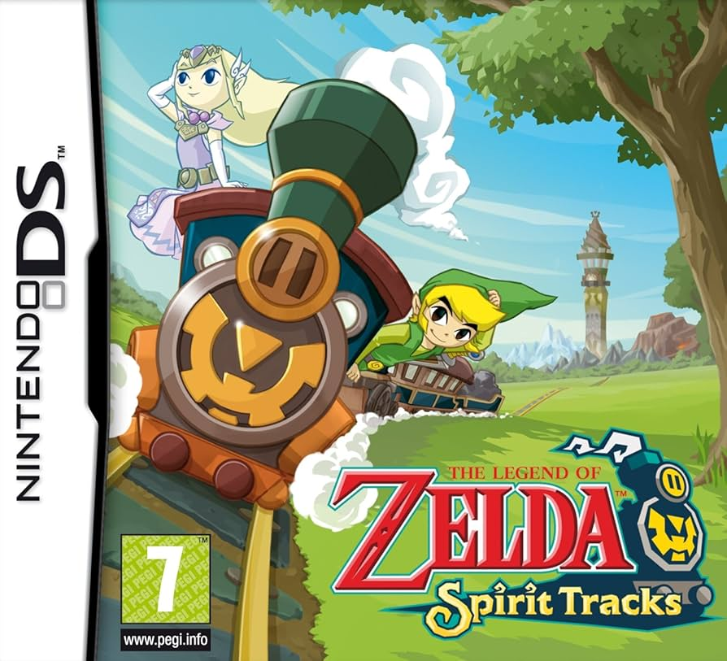

Spirit Tracks ersetzte Schifffahrt durch Zug-Navigation und kombinierte Loksteuerung mit Puzzles und Begleiter-Mechaniken. Die musikalische Gestaltung und die Streckenstruktur verliehen dem Titel einen eigenen Rhythmus.
| Titel | The Legend of Zelda: Spirit Tracks |
| Veröffentlichung | 2009 (gestaffelt) |
| Plattform | Nintendo DS |
| Entwickler | Nintendo EAD |
| Produzent | Nintendo |
| Komponist | Toru Minegishi |
Spirit Tracks ersetzt die offene Seekarte durch ein Schienennetz und Lokomotivsteuerung: Reisen werden zu Rätselelementen; Hands-on-Steuerung der Lok beeinflusst Pacing und Puzzles. Der Begleiter-Geist als Gameplay-Mechanik ermöglicht kontrollierte Umgehung von Hindernissen (z. B. aktivieren von Tempelmechaniken) und führt narrative Bindungen ein. Musik ist integraler Spielmechaniker (Leitmelodien, Signalgebung), und die Kombination aus Zugfahrten und Tempelrätseln unterscheidet das Spiel klar vom maritimen Vorgänger.